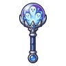
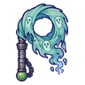

ผู้จุดตะเกียงรุ่นแรก
มอนธาตุวิญญาณ Lv 98–99
เจอที่
| แมพ | โซน | Lv | ภูมิภาค |
|---|---|---|---|
| หลุมดาว ชั้น 1 · พื้นแก้ว | 98–99 | ที่ราบสูง | |
| หลุมดาว ชั้น 2 · ใจกลางดาว | 99–99 | ที่ราบสูง |
ค่าสถานะตามเลเวล
| Lv | HP | ATK | DEF | MDEF | EXP | Job |
|---|---|---|---|---|---|---|
| 98 | 95,727 | 317–475 | 35 | 44 | 210 | 158 |
| 99 | 98,313 | 323–484 | 36 | 45 | 212 | 159 |
ตีด้วยธาตุไหนดี
แรงขึ้น: วิญญาณ ×1.25
เบาลง: ไม่มีธาตุ ×0.25
วัตถุดิบที่ดรอป
| ของ | โอกาส | |
|---|---|---|
| ถ่านไฟดาว | 60% | 1 ชิ้น (15% ได้ 2) |
อุปกรณ์ที่ดรอป (9)
| ของ | โอกาส |
|---|---|
| 0.25% | |
| 0.25% | |
| 0.12% | |
| 0.06% | |
| 0.06% | |
 กระบองลูกแก้ววิญญาณ | 0.06% |
| 0.06% | |
| 0.06% | |
 แส้ผ้าคลุมวิญญาณ | 0.06% |
สกิล
วาร์ป (Lv 25+) · วาร์ป (Lv 60+) · ม่านเวท (Lv 60+)